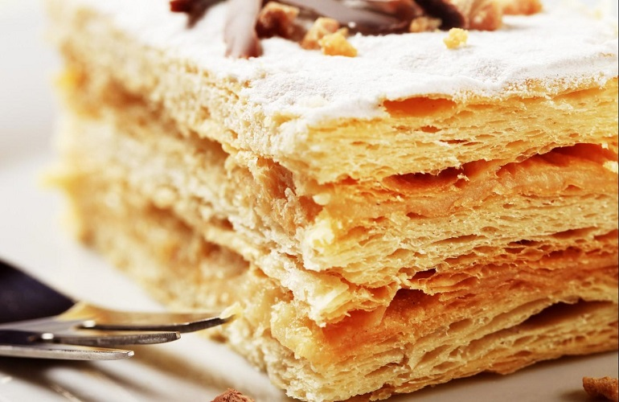
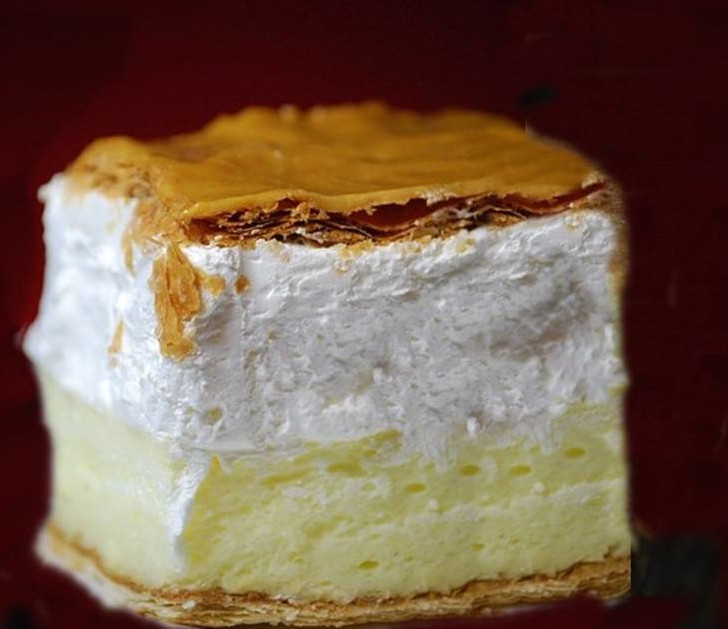
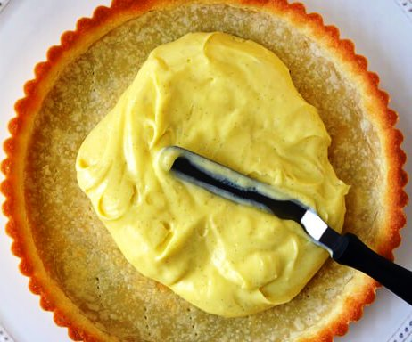

A magyar desszertkínálat oszlopos tagja a krémes. Az olasz és francia gyökerekkel bíró sütemény annyira hozzátartozik az országhoz, hogy hajlamosak vagyunk azt hinni, valamelyik lánglelkű magyar cukrász alkotta meg.
A krémes eredete a múlt ködébe vész,de szinte egész Európában megtalálható. A XIX. századig főleg az olaszok és a franciák körében volt ismert mille foglie vagy mille feuille néven ismert édesség, amely mindkét myelven "ezernyi lap"-ot jelent. Ez az utalás egyértelműen a sütemény tésztájára vonatkozik, hiszen a jól elkészitett leveles tészta sajátja, hogy ezernyi vékony hártyára képes omlani.
A milliefeuille-t először egy 1651-ben megjelent szakácskönyvben említik, ám igazi felemelkedésére egészen a napóleoni időkig várni kellett. A Talleyrand házi szakácsából Napóleon séfjévé avanzsált Careme idejében vált közkedvelt édességé, amikor egy (a származására utaló) áthallásnak köszönthetően maga a császár vált a sütemény keresztapjává. Ekkortájt kezdték Napóleon tortaként (Napolitain) árulni, ami az olaszoknál is ismert sütemény esetében szinte biztos, hogy eredetileg "a nápolyi" jelzőként volt értelmezhető, ám az uralkodó személye elhomályosította a sütemény nevének eredeti jelentését.
Az olaszországi gyökerekre utaló név jogosságát erősíti, hogy a legenda szerint az olasz cukrászokat, s velük a millefoglie receptjét Medici Mária toszkán nagyhercegnő hozta magával, amikor 1600-ban hozzáment IV. Henrik francia királyhoz. Bár vannak olyan történetek is, amelyekben XIII. Lajos szakácsinasa szerepel, mint a millefeuille megalkotója. Annyi bizonyos, hogy a leveles tésztás sütemények már igen régóta kedveltek voltak, hiszen a bizánci időkig nyúlik vissza a történetük, amikor leggyakrabban mézzel csorgatva fogyasztották, s a 13. században már arab szakácskönyvekben is megjelent ez a tészta.
A Larousse szerint a millefeuille csak a XIX. században jött létre, egyes források szerint az első írásos megjelenése 1806-ban volt. Ami igazán meglepő, hogy a XIX. század elején – bizonyos, nem megerősített források szerint - a karamellréteggel bevont millefeuille-t Szegedinertorte néven emlegették, megemlékezvén arról, hogy ezzel a bevonattal Szegeden készült először ez a sütemény.
Az első igazán emblematikus krémes megalkotása a Ruszwurm cukrászda egykori tulajához Ruszwurm Vilmoshoz köthető. Ruszwurm az addigi recepten módosítva új, unikális krémest hozott létre azzal, hogy a krémesben lévő krémet tojásfehérjéből vert hab helyett tejszínből készített habbal lazította. Őt követően a legtöbb, hírnévvel bíró cukrászda saját, egyedi krémes kialakításán dolgozott. Így jött létre az Auguszt-krémes, vagy vált nagyon kedveltté a Hauer család által megalkotott sütemény.
A krémes krémje leggyakrabban ún. sárgakrémből - vagy más néven cukrászkrémből - készül. A krém alapja a tej és a nagy mennyiségű tojássárgája, ehhez jön a cukor és a vaníliarúd kikapart belseje. A krémet kukoricakeményítővel vagy kevés liszttel kötik, s bizonyos sütemények töltéséhez a tojások fehérjének felvert habjával lazítják. A millefeuille tetejét cukormáz borítja, és több rétegű benne a krém
Míg a millefeuille tetejét gyakorta húzzák be különféle cukormázakkal, csokoládémázzal, szórják meg pirított dióval vagy mandulával, a magyar hagyományoknak megfelelően a sima krémes tetején csupán frissen hintett porcukor pihen. Persze más a helyzet a francia krémesnek aposztrofált süteménnyel, ami annyiban tér el a klasszikus krémestől, hogy felvert tejszínhab réteg választja el a sárgakrémet a második tésztarétegtől, valamint a tetejét porcukor helyett vékony karamell fondant fedi...